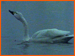

In winter two other types of swan visit Ireland.
These are smaller than mute swans and they are much more timid. They prefer
uninhabited parts of the country where they are not disturbed by people.
They arrive in Ireland from the remote breeding grounds inside the Arctic
Circle during October and November and stay until March. They have to leave
their breeding grounds for the winter as everything is covered with snow.
The whooper swan is the more common of the two. It is a bird with pure
white plumage and black legs, like the mute swan, but it holds its neck
straight and its bill is different. There is no knob at the base and it
is black and yellow it is called a whooper swan on account of its lovely
musical whooping call which can be heard as it flies overhead on migration.
Its call sounds just like a bugle. At dusk whoopers collect in large, noisy
parties in their favourite haunts: shallow waters such as turloughs, or
callows, the flooded areas along a river bank.
(Whooper
and Bewick's swans both have a yellow bill with a black tip).
Whooper swans which spend the winter in Ireland
come mostly from Iceland. They make the long journey of 1500 kilometers
back there each summer to breed. They make their nests of moss and lichens
on lakes, pools and marshes and lay four to seven creamy white eggs.
Bewick swans are vary similar to whoopers and the two are very difficult to tell apart. The main difference is the smaller more rounded yellow patch at the base of the bill in the Bewick. The Bewick swan is also smaller than the whooper and is not so noisy. It is called after the famous English naturalist, Bewick, who first recognised it as a separate species in 1830.
Bewick swans come from the very northern parts
of Russia and Siberia, up to 5000kilometers away, to spend the winter in
Ireland. They are not as widespread as whoopers, and they congregate in
large flocks in several parts of the country. Ireland is an important wintering
ground for Bewick swans. Our population of about 2000 birds is about one
quarter of the total number found in Europe during the winter.
In the past, people in Ireland used to shoot
wild swans for food, and the used to be sold in the Dublin market. There
is an old legend which claims that a dying swan sings a wailing song. This
belief is probably based on the fact that dying swans produce a musical
note as the last breath is released from the windpipe.
Lough Swilly and Lough Foyle in Counties Donegal and Derry, the North Slob in Wexford and Rahasane Turlough, Co.Galway, are good places to see wild swans. They are also found on the Shannon south of Athlone, on the River Nore, at Doonbeg, Co Clare, and on Lough Gill, Co Kerry, as well as many other small lakes all over the country.